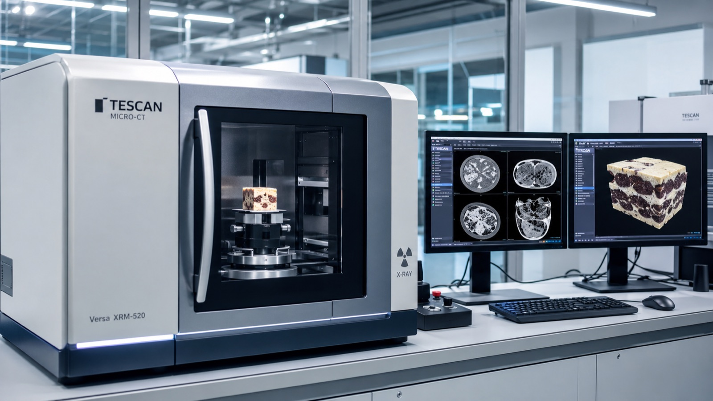
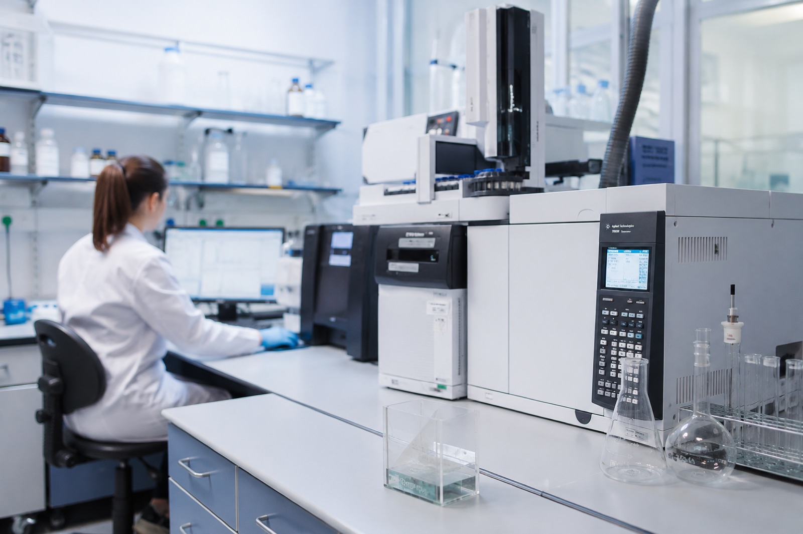
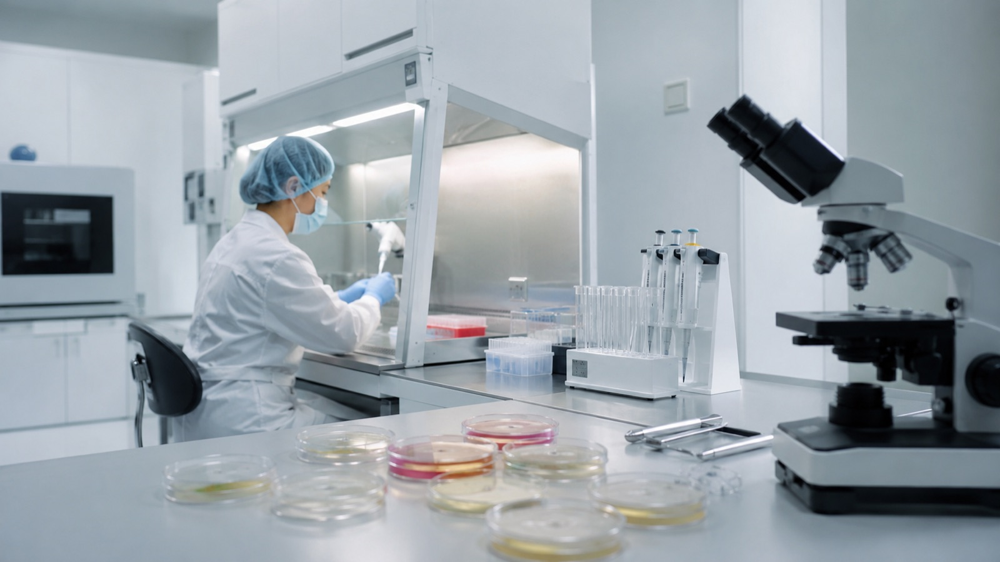

Испытания, экспертиза и обучение для кондитерских производств
Подтвердим качество и срок годности, разберём рекламацию, разработаем ТУ и рецептуру, обучим технологов. Более 100 методик по ГОСТ и приборная база НИИ в составе РАН.
Чем поможем бизнесу
- Установление и подтверждение срока годности
- Состав, жиры, шоколад, мучные изделия — анализ по ГОСТ
- Неразрушающий КТ-контроль структуры и пористости
- Разработка ТУ, ТИ и рецептур, расчёт пищевой ценности
- Повышение квалификации с удостоверением (лицензия)
Полный цикл — от анализа до документа и обучения
Выберите задачу — мы соберём нужные испытания в один пакет с протоколом и заключением.
Сроки годности
Обоснование и подтверждение срока годности для маркировки, вывода продукта и снятия рекламаций.
Подробнее →Аналитические испытания
Жиры и порча, химсостав, влага и активность воды, ЯМР, ИК-спектроскопия, лазерная дифракция.
Подробнее →Шоколад и какао
Идентификация шоколада, товароведческий анализ какао-бобов, эффективность глазури, экспертиза.
Подробнее →КТ-контроль структуры новое
Неразрушающая морфометрия пористости по томограмме — объективные цифры без разрезания образца.
Подробнее →Документация и рецептуры
Разработка ТУ и ТИ, подбор сырья и рецептур, технологические расчёты, импортозамещение.
Подробнее →Обучение и курсы
Повышение квалификации технологов и специалистов по качеству. Удостоверение, образовательная лицензия.
Подробнее →Приборная база и испытания
Каркас под реальные фотографии лаборатории, оборудования и образцов — институт подставляет свои снимки (JPG, соотношение 4:3).



КТ-морфометрия пористости
Оценим пористость, размер и распределение пор и плотность изделия без разрезания образца — по компьютерной томограмме. То, что недоступно классической микроскопии и лазерной дифракции.
Посмотреть метод и онлайн-демоНе список анализов, а решение вашей задачи
Каждый сценарий — это собранный пакет испытаний, документов и консультаций под конкретную ситуацию.
Рекламация по качеству
Независимое заключение института в споре с сетью или контролёром.
К решению →Запуск нового продукта
Состав, срок годности, ТУ и маркировка — пакет «под ключ».
К решению →Замена сырья
Подбор и проверка аналога сырья без потери качества продукта.
К решению →Контроль структуры
Объективная оценка пористости «до/после» изменения рецептуры.
К решению →Повышение квалификации с удостоверением
Органолептический анализ кондитерских изделий
Для технологов и специалистов по качеству. Удостоверение о повышении квалификации.
Программа и запись →Методы определения диоксида серы
Для сотрудников лабораторий и технологов. Практика в лаборатории института.
Программа и запись →Техрегламенты и маркировка мучных изделий
Для руководителей и специалистов по качеству. Разбор требований ТР ТС.
Программа и запись →Новое: Ремесленная школа для мастеров
Программы института для частных кондитеров, пряничников и малых производств — органолептика, срок годности с лабораторным протоколом, маркировка, контроль сырья.
Расскажите задачу — подберём испытания и сроки
Ответим в течение рабочего дня, предложим перечень исследований, сроки и стоимость. Можно приложить ТЗ или фото продукта.